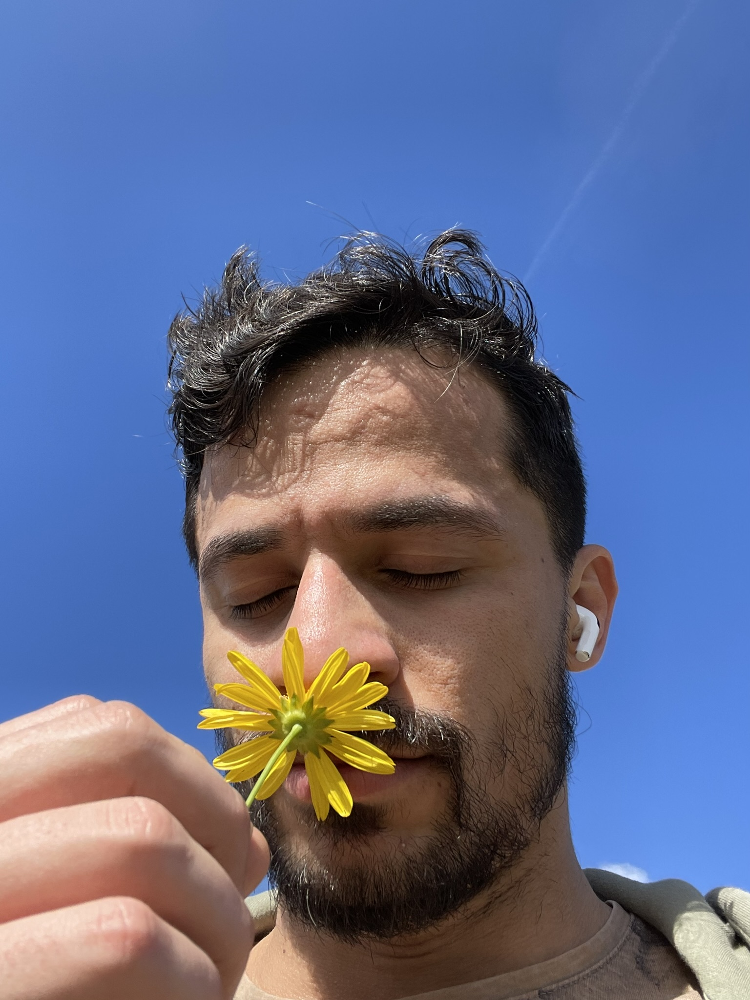

Uma Flor, Uma Emoção
Este é um espaço seguro e acolhedor para você compartilhar suas próprias fotos de flores e as emoções que elas evocam. Seja um pôr do sol dourado refletido nas pétalas de um girassol ou o orvalho da manhã adornando uma flor de lótus, cada imagem tem o poder de nos conectar uns aos outros por meio de nossos sentimentos compartilhados.
Junte-se à nós 